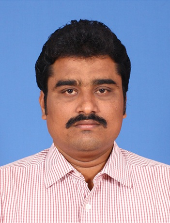
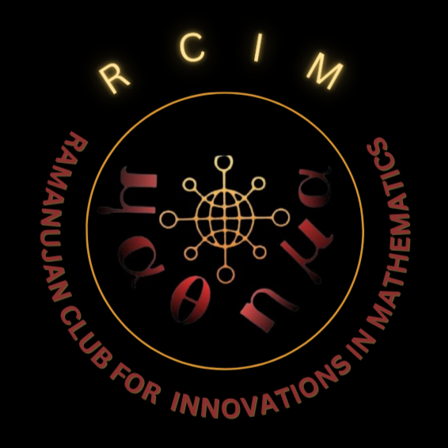
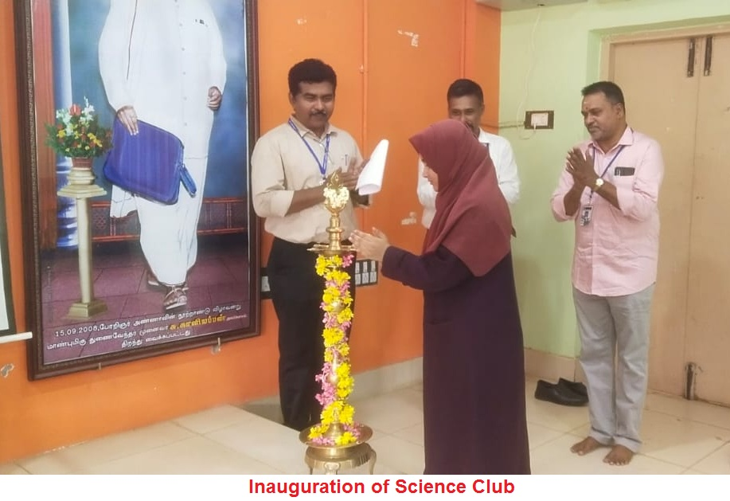
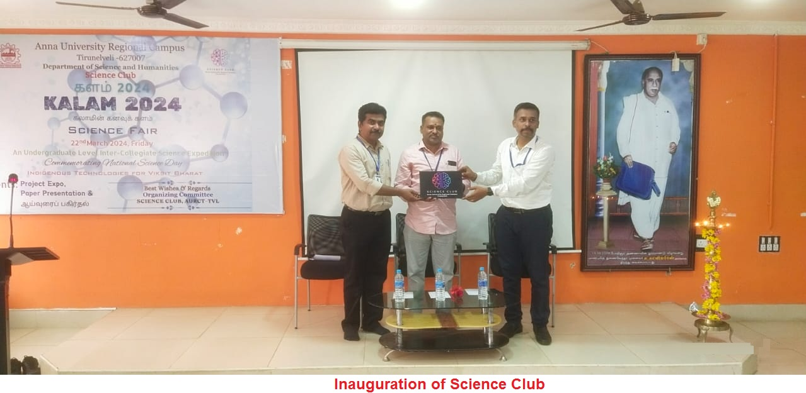
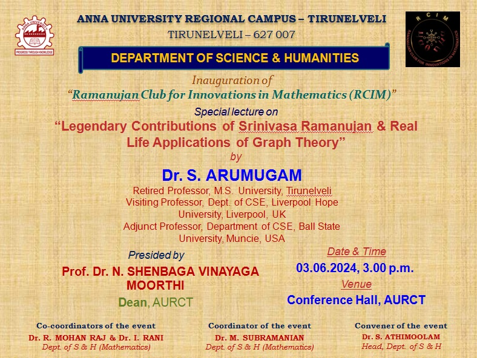
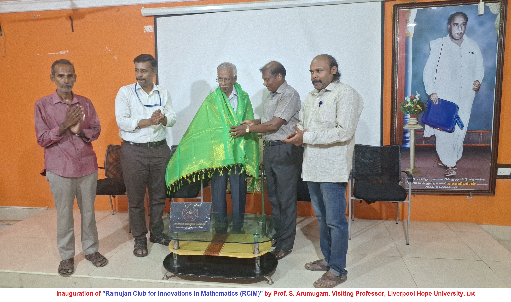
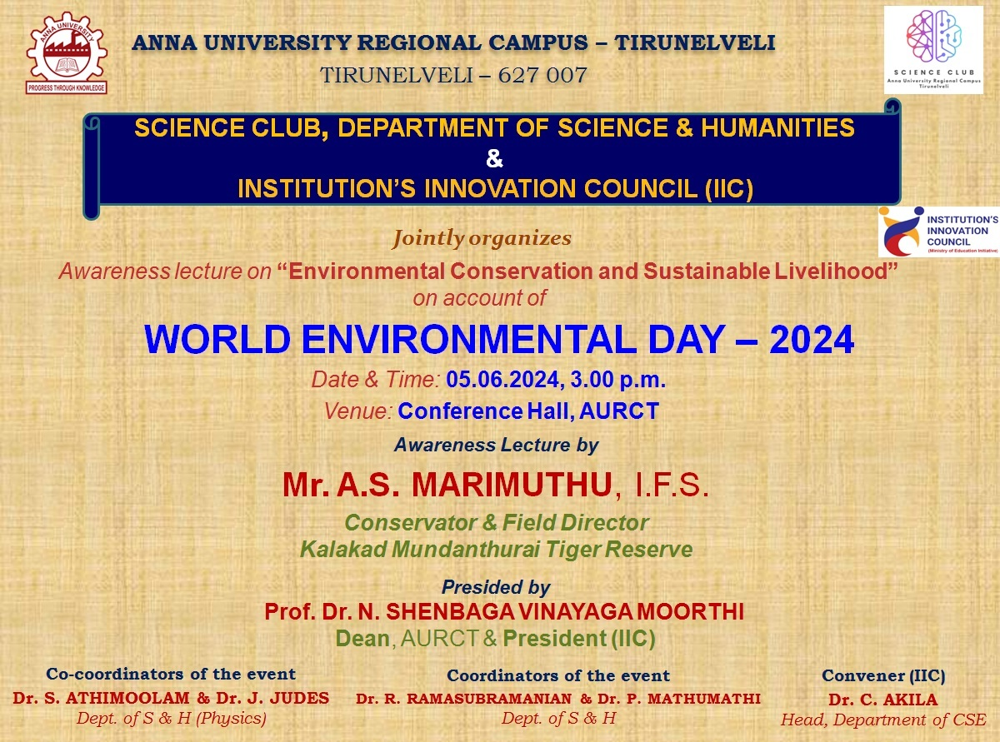
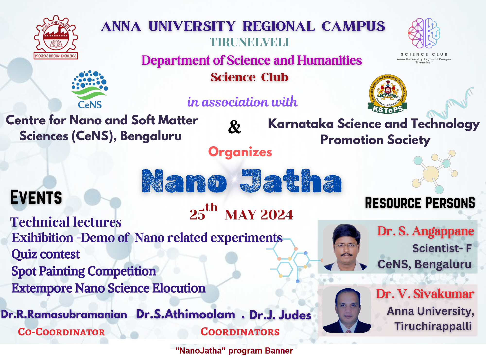

About the Department
Mathematics
The Department of Mathematics conducted a Bridge course - A Special Orientation Programme for Mathematics faculty members of all affiliated colleges in this region at the Anna University Regional Campus - Tirunelveli.
Physics
The Department of Physics was established in 2008. The faculty members of this department are engaged with the undergraduate teaching of Engineering physics for the B.E/B.Tech. students. The department is offering Ph.D. in the field of crystal growth, semiconductor thin films deposition, Photovoltaic's and Energy generation etc. The physics laboratory for the first year undergraduate students is well equipped to do the experiments for physics practical classes.
Chemistry
The goal of the department is to strengthen the knowledge in Applied Chemistry of the students which will make them to solve the problems related to Engineering Chemistry effortlessly. The enriched experience of faculty members in teaching and research will cater the students to expose themselves in their research field. The well developed laboratories provide the facilities for the students to trial the practical possibilities of the problems given to them. The faculty members make the publications of their research work in high index journals continually. The campus supports the department to conduct many workshops, seminars and conferences to enlighten the knowledge of our students.
English
The department of English strives to produce versatile and creative students with strong interpretive and communicative skills needed for the today's changing world. It equips students with the English language skills required for the successful undertaking of academic studies with primary emphasis on academic listening skills, speaking skills, reading skills and writing skills.
It improves general and academic listening skills. It provides guidance and practice in basic general and class room conversation so as to participate confidently and appropriately in conversations both formal and informal. It strengthens the reading skills of students. It enhances their writing skills with specific reference to technical writing. Thus it enhances the employability and career skills of students and makes them Employable Graduates.
Faculty Profile
Head of Department
Chemistry
English
Mathematics
Physics

Non-Teaching Staff


Mr. P. Rengasamy
Lab Assistant
Science Club
Prelude
Science Club is the platform for the students to promote their scientific interest, realize their scientific skills and fulfill their quest in doing science activities. To inculcate the scientific temper among the students and society is an essential activity of this club with science popularization talks, visit to scientific places, etc. Further, the club aims to organize Seminars, Workshops, Exhibition and Quiz competition to instill students knowledge and skill in the field of science.
Objectives
- To inculcate scientific attitude among the students
- To provide opportunity for the development of the constructive, explorative & inventive ideas among the students
- To develop the training in scientific method of problem solving
- To develop students' interest and participation in the practical applications of the knowledge related to different branches of sciences
Modalities from University
As per the Regulation 2021, clause 4.2 (and earlier regulations), all the students shall enroll in any one of the personality and character development programmes, namely, NSS / NSO / YRC / Literary Club / Science Club and undergo training / conduct of activities for about 80 hours and attend a camp / event.
"Science Club shall organize activities of popularization of science and scientific temper through activities related to astronomy, works of great scientists from India and abroad, observing National Science Day, etc."
Faculty In-Charge for Science Club
Dr. J. Judes
Assistant Professor (Physics), Dept. of S & H
Ramanujan Club for Innovations in Mathematics (RCIM)

"In Mathematics the art of proposing a question must be held of higher value than solving it."
Math is a linear learning process. It gives us a way to understand patterns, to quantify relationships and to predict the future. Math helps us understand the world and we use the world to understand Math. Mathematics is the science that deals with the logic of shape, quantity and arrangement. It is useful way to think about nature and our world. Mathematics exists everywhere and it is applied in the most useful phenomenon.
It is an integral part of daily life formal and informal. It is used in technology, business, medicine, natural and data sciences, Machine learning and construction. It is not just about numbers, most of it problem solving and reasoning, inductive and deductive. It also discusses also intuition, Proof and certainty.
Shri. Srinivasa Ramanujan was one of India's greatest Mathematical geniuses. He made substantial contributions to the analytical theory of numbers and worked on elliptic functions, continued fractions, and infinite series. Every year, on December 22, India observes its National Mathematics day in honour of Shri. Srinivasa Ramanujan, regarded as one of the greatest Mathematicians to ever grace the planet.
"An Equation Means Nothing to me Unless It Expresses a thought of God"
In this regard, to honour Shri Srinivasa Ramanujan and inculcate his Mathematical temper into the young minds, the Department of Science & Humanities started a Mathematics club in the name of "RAMANUJAN CLUB FOR INNOVATIONS IN MATHEMATICS (RCIM)".
There should be a scope of learning beyond class room confinement to widen the knowledge of students and to provide exposure for real life problems relating to society. It helps the students in having an idea of the practical utility of Mathematics in addition to creating their interest in Mathematics and to encourage their creativity. It helps our students get to grips with a wide range of Mathematical Principles. Its mainly to encourage passionate engagement with mathematics by promoting diverse activities that go beyond regular classroom learning.
Video Resources
Gallery





